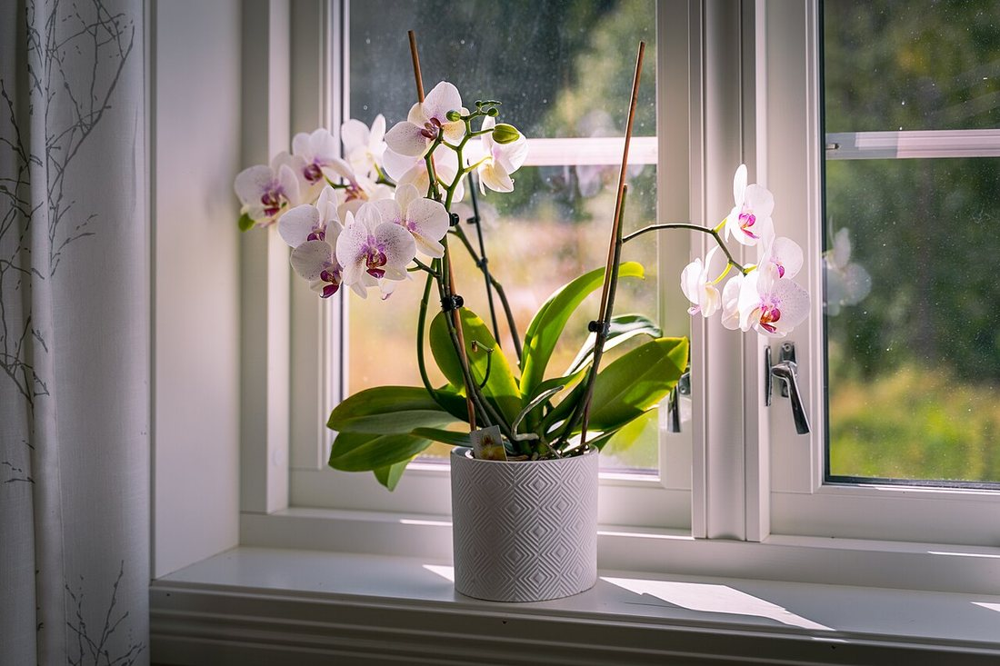
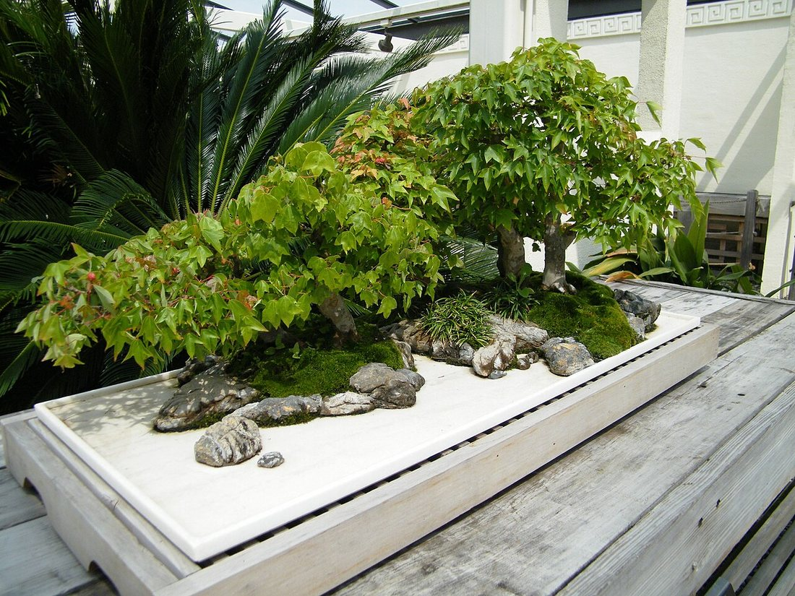
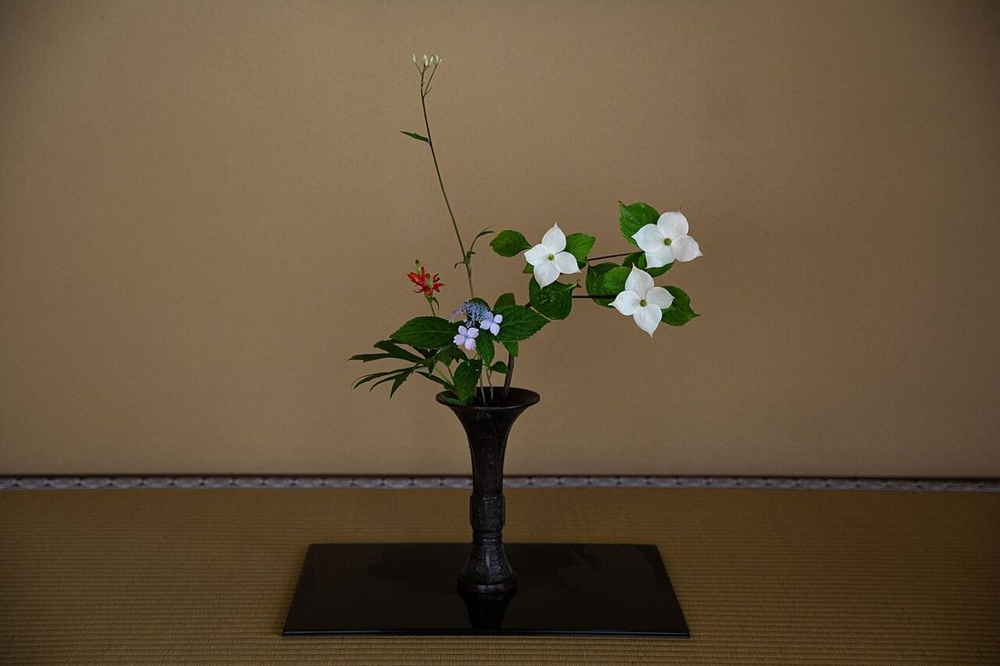

Көркем еңбек · 5-бөлім · Үй мәдениеті Art & Craft · Section 5 · Home Culture Художественный труд · Раздел 5 · Культура дома
🌿 Фитодизайн: бөлме өсімдіктері, бонсай, икебана
🌿 Phytodesign: Houseplants, Bonsai, Ikebana
🌿 Фитодизайн: комнатные растения, бонсай, икебана
Кеңістікті тірі өсімдіктермен әсемдеу өнері. The art of decorating a space with living plants. Искусство украшать пространство живыми растениями.
Фитодизайн — тірі өсімдіктердің көмегімен үй мен бөлмені әсемдеу. Өсімдік ауаны тазартады, ылғал береді, көзге жайлы әрі көңіл күйді көтереді. Үш танымал бағытпен танысамыз: бөлме өсімдіктері, жапон бонсайы және гүл шоғын құрау өнері — икебана. Phytodesign is decorating a home or room with living plants. Plants clean and humidify the air, please the eye and lift the mood. We will look at three popular directions: houseplants, the Japanese bonsai, and the art of flower arranging — ikebana. Фитодизайн — украшение дома и комнаты с помощью живых растений. Растения очищают и увлажняют воздух, радуют глаз и поднимают настроение. Познакомимся с тремя популярными направлениями: комнатные растения, японский бонсай и искусство составления букетов — икебана.
Үш бағытThree DirectionsТри направления
🔍 Үлкейту үшін фотоны басыңыз.🔍 Tap a photo to enlarge.🔍 Нажмите на фото, чтобы увеличить.

Терезе мен сөреге — орхидея, фикус, сукуленттер. Жасыл бұрыш үйді тірілтеді.On the sill and shelf — orchids, ficus, succulents. A green corner brings a home to life.На подоконник и полку — орхидеи, фикус, суккуленты. Зелёный уголок оживляет дом.

Жапония. Кішкене ыдыста өсірілген нағыз ағаштың миниатюрасы — шыдамдылық өнері.Japan. A miniature of a real tree grown in a small tray — an art of patience.Япония. Миниатюра настоящего дерева в маленьком контейнере — искусство терпения.

Жапон гүл құрау өнері. Үндестік: аспан–адам–жер деген үш сызық.Japanese flower arranging. Harmony of three lines: heaven–human–earth.Японское искусство аранжировки. Гармония трёх линий: небо–человек–земля.
Өсімдікке күтімPlant CareУход за растениями
СуаруWateringПолив
Топырақ кепкенде, шамамен. Артық су тамырды шірітеді.When the soil dries, in moderation. Too much rots the roots.Когда подсохнет почва, умеренно. Избыток гноит корни.
ЖарықLightСвет
Көбіне жарық керек, бірақ тік күн күйдіреді.Most need light, but direct sun can burn.Большинству нужен свет, но прямое солнце обжигает.
ТемператураTemperatureТемпература
Бөлме жылуы. Суық желден қорғаңыз.Room warmth. Protect from cold draughts.Комнатное тепло. Берегите от сквозняков.
ЫлғалHumidityВлажность
Жапырақты бүрку, әсіресе қыста.Mist the leaves, especially in winter.Опрыскивайте листья, особенно зимой.
💬 Қорытынды💬 In a nutshell💬 Главное
Фитодизайн үйге тазалық, жайлылық пен сұлулық әкеледі. Бөлме өсімдіктері, бонсай мен икебана — табиғатпен үндесудің әртүрлі жолы. Өсімдікке дұрыс күтім (су, жарық, жылу, ылғал) жасасаң, ол сені жасыл сұлулығымен қуантады.Phytodesign brings cleanliness, comfort and beauty home. Houseplants, bonsai and ikebana are different ways of being in harmony with nature. Care for a plant properly (water, light, warmth, humidity) and it will reward you with green beauty.Фитодизайн приносит в дом чистоту, уют и красоту. Комнатные растения, бонсай и икебана — разные пути гармонии с природой. Ухаживай за растением правильно (вода, свет, тепло, влажность) — и оно отблагодарит зелёной красотой.